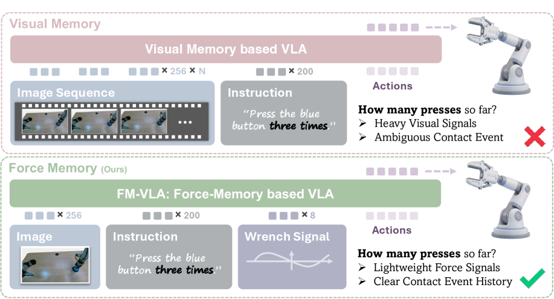
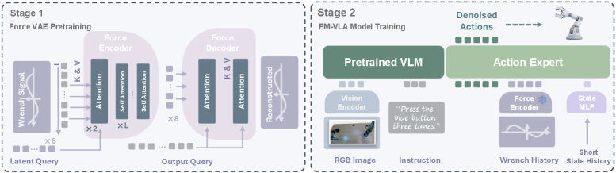

비전만으로는 "이미 버튼을 몇 번 눌렀는지" 같은 과거 접촉 이력을 알 수 없다. FM-VLA는 손목 6축 wrench 센서 시계열을 Perceiver-IO VAE로 K=8개의 force memory token으로 압축, π₀.₅의 flow-matching action expert에 붙여 non-Markovian 접촉 태스크를 해결. AgiBot G1 이중팔에서 블록 찾기 100%·버튼 반복 눌림 72.2%·그릇 반복 닦기 77.8% — 평균 83.3%(π₀.₅ 27.8%, 시각 메모리 π-MEM 53.7%). 추론 오버헤드는 3.3ms로 시각 메모리(39–129ms)의 1/10 미만.
1배경 · 문제의식
Peg-in-hole, 버튼 N회 누르기, 컵 닦기(N-pass) 같은 접촉-집약 반복 태스크는 시각으로는 상태 구분이 어렵다(버튼이 이미 눌렸는지, 몇 번 닦았는지 등). 시각 메모리(과거 프레임)를 넣으면 컨텍스트 길이가 폭증해 지연이 크고, 실제 물리적 접촉 정보를 명시적으로 담지 못한다. 저자들은 손목 6축 force/torque(wrench) 신호가 (a) 접촉 여부·강도·리듬을 매우 압축적으로 표현하고, (b) 시각과 상보적이라 관찰한다.
2핵심 Contribution
Force-VAE — 잡음이 심한 wrench 시계열을 Perceiver-IO 기반 VAE로 K=8 latent token으로 압축. 마스킹 ELBO로 재구성 사전학습, 랜덤 노이즈 pre-padding으로 시퀀스 길이 shortcut 방지.
π₀.₅에 최소 침습 삽입 — 동결 Force-VAE 인코더 + 짧은 상태 히스토리 프로젝터를 flow-matching action expert의 접미부에 추가 (noisy-action 뒤에 K=8 force + 1 state = 9 토큰).
비-마르코프 접촉 태스크 SOTA — 3개 memory-dependent 실태스크 평균 83.3%, 시각 메모리 대비 오버헤드 ~1/10. 접촉 리듬이 필요한 태스크에서 시각 메모리도 실패하는 사례를 힘 메모리가 해결.
3Method
Force-VAE 사전학습
손목 wrench 6축 100Hz 시계열을 window로 자름 → 저자들이 수집한 접촉-집약 데이터셋에서 Perceiver-IO 인코더가 K=8 learnable latent token으로 압축. VAE 디코더는 시계열 재구성. 학습 손실은 masked ELBO. 학습 트릭: (a) 1차 EMA(α=0.3)로 고주파 노이즈 제거, (b) 시퀀스 앞을 랜덤 노이즈로 pre-pad 해 "시계열 길이"로 문제를 풀지 못하게 강제.
VLA 파인튜닝 (π₀.₅ 확장)
백본은 π₀.₅(PaliGemma VLM + flow-matching action expert). Force-VAE 인코더는 동결. action expert 입력 접미부에 다음 순서로 삽입:
기존 noisy-action tokens
Force memory tokens (K=8, dim 384→hidden으로 프로젝션)
State history token (최근 0.9s 관절 위치를 linear projector로 1 token 요약)
모든 후속 토큰은 self-attention으로 서로 참조하며, VLM 계산은 재사용/캐시되므로 추가 지연 최소.
시스템 · 데이터
플랫폼
AgiBot G1 이중팔 (7-DoF × 2, 손목 6축 wrench 100Hz)
VAE 크기
Perceiver-IO, K=8 latent, dim 384
백본
π₀.₅ (PaliGemma VLM, flow-matching action expert)
State window
0.9s (=~90 스텝) → 1 token으로 요약
추론 오버헤드
+ ~3.3 ms (vs 39–129 ms 시각 메모리)
4실험 결과
3개 memory-dependent 실태스크 (성공률 %)
태스크
π₀.₅ (baseline)
π-MEM (시각 메모리)
FM-VLA
Find Block Under Cups (숨은 블록 찾기)
72.2
77.8
100.0
Press Button (1–3회 반복)
11.1
33.3
72.2
Wipe Bowl (1–3 pass)
0
50.0
77.8
평균
27.8
53.7
83.3
시각 메모리도 못 잡는 접촉 리듬 태스크(버튼 반복, 그릇 반복 닦기)에서 큰 격차. π₀.₅는 반복 카운트가 필요한 태스크에서 사실상 0%.
추론 오버헤드
+3.3 ms per action (Force-VAE 인코더 forward + projection). 시각 메모리 baseline은 39–129 ms로 실시간 제어(≥10Hz)에 실질적 부담. FM-VLA는 100Hz 손목 센서를 그대로 유지하면서도 지연 무시 가능.
5Ablation (주요 발견)
Force 메모리 제거 → π₀.₅ 수준: 반복 카운트가 필요한 태스크에서 성공률 급락. 시각 관찰만으로는 상태 구분 실패.
VAE 대신 raw wrench concat: 노이즈에 정책이 흔들려 성공률 저하. VAE의 노이즈 억제·압축이 중요.
State history 제거: 그리퍼 자세 변화가 필요한 seq(닦기·눌림) 실패율 상승.
pre-pad 노이즈 학습 트릭 제거: 정책이 "시퀀스 길이" shortcut을 학습해 실환경에서 실패.
6핵심 Figure / Table

Figure 1 — Force vs Visual Memory. 시각 메모리는 이미 눌린 버튼과 미눌림 버튼을 구별하지 못하지만, 힘 이력은 접촉/비접촉을 즉시 구별. FM-VLA는 이를 K=8 토큰으로 압축해 action expert에 주입. (출처: arXiv:2607.18231)

Figure 2 — 아키텍처. π₀.₅ 백본에 Force-VAE 인코더(동결)와 state projector를 추가. action expert 접미부에 K=8 force + 1 state 토큰이 붙어 flow-matching 예측을 조건화. (출처: arXiv:2607.18231)
핵심 표 — Wipe Bowl에서 π₀.₅ = 0% → FM-VLA = 77.8%. "시각으로는 못 세는 반복 카운트를 힘으로 센다"는 이 논문의 슬로건이 정확히 재현된다.